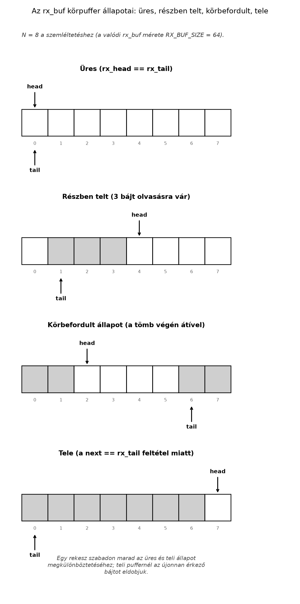

A beágyazott rendszerek többségében a soros kommunikáció az egyik
legalapvetőbb perifériakezelési feladat. Egy szenzoradatokat fogadó,
parancsokat értelmező vagy egyszerűen csak konzolüzeneteket naplózó
firmware gyakran UART-on keresztül kommunikál a külvilággal. Ha a vételt
pollinggal valósítjuk meg, a CPU aktívan pörög, és nem tud aludni vagy
más feladatot végezni. Ezzel szemben az interrupt-vezérelt vétel
lehetővé teszi, hogy a CPU alvó állapotban (WFI) vagy más
kritikus feladat végrehajtásában legyen, amíg a periféria jelzi, hogy új
bájt érkezett. Ez a minta nem csak UART-ra, hanem szinte minden bemeneti
perifériára (SPI, I2C, ADC) adaptálható.
Ebben az alfejezetben egy minimális, de teljes UART drivert építünk
fel a QEMU mps2-an385 machine CMSDK APB UART perifériájára.
A fókusz a vételi irányon van: a bejövő karaktereket megszakításban
fogadjuk, és egy körkörös pufferbe (ring buffer) helyezzük. A küldést
egyszerű pollingos putc-vel oldjuk meg, hogy a példa ne
zsúfolódjon el. Az itt bemutatott regiszterkezelés és ISR-szerződés
közvetlenül használható más ARM Cortex-M alapú driver fejlesztésénél
is.
A UART (Universal Asynchronous Receiver/Transmitter)
egy olyan memóriába leképezett periféria, amely párhuzamos adatokat
soros formában továbbít, illetve soros adatokat párhuzamosít. A CMSDK
APB UART egy egyszerű, ARM által definiált periféria, amelyet a QEMU
mps2-an385 modellje is implementál. A regisztertérképe öt
32 bites regiszterből áll, amelyek a periféria báziscíméhez képest fix
offszeteken érhetők el. Az alábbi táblázat a CMSDK APB UART térképe; a
0x40004000 báziscímet és az IRQ0-t a labor a fő úton (QEMU
8.2.2) igazolja. Más platformra portolva a címeket és az IRQ-számot a
célplatform dokumentációjából kell venni.
| Regiszter | Offszet | Írás | Olvasás |
|---|---|---|---|
DATA |
0x000 | Küldendő bájt | Vett bájt |
STATE |
0x004 | bit2 TXOVERRUN, bit3 RXOVERRUN:
write-1-to-clear; a többi bit írása hatástalan |
Állapotbitek: TXFULL, RXFULL, TXOVERRUN, RXOVERRUN |
CTRL |
0x008 | Vezérlés: TXEN, RXEN, TXIE, RXIE | Vezérlés visszaolvasása |
INTSTATUS |
0x00C | Write-1-to-clear: a megfelelő bitre írt 1 törli a jelzőt | Aktív megszakítások: TXINT, RXINT |
BAUDDIV |
0x010 | Baud osztó értéke | Baud osztó visszaolvasása |
A CTRL regiszter bitjei a következők:
TXEN — adó engedélyezéseRXEN — vevő engedélyezéseTXIE — adási megszakítás engedélyezéseRXIE — vételi megszakítás engedélyezéseA STATE regiszter bitjei:
TXFULL — adó puffer megteltRXFULL — vevő puffer megtelt (van olvasható
adat)TXOVERRUN — adási túlcsordulás (W1C)RXOVERRUN — vételi túlcsordulás (W1C)Az INTSTATUS regiszter bitjei:
TXINT — adási megszakítás aktívRXINT — vételi megszakítás aktívFontos szerződés: a vételi megszakítás
(RXINT) akkor áll be (latch-elődik), amikor egy bájt
beérkezik és a RXIE engedélyezve van; az
RXFULL ettől független pufferállapot. A DATA
regiszter olvasása törli a STATE.RXFULL bitet — ezzel a
periféria a következő bájtot fogadhatja —, de nem törli
az INTSTATUS.RXINT jelzőt, amely a hardverben attól a
pillanattól önálló, “latched” (rögzített) állapotként él. A már
megállapított RXINT-et külön,
write-1-to-clear móddal kell törölni: az
INTSTATUS megfelelő bitjébe 1-et kell írni. Az
INTSTATUS puszta olvasása a jelzőt nem törli. Ha a
DATA kiolvasása után elmarad az INTSTATUS-ba
írt törlés, az NVIC a megszakítást továbbra is pendingnek látja, és a
vezérlés az ISR visszatérésekor azonnal újra belép (tail-chaining)
ugyanabba az ISR-be: megszakítási vihart okozva, amely
a CPU-t teljesen lefoglalja. Az adási megszakítás (TXINT)
nem szintvezérelt: akkor áll be (latched), amikor egy bájt elküldése
után az adópuffer kiürül, és a TXIE engedélyezett. Üres
pufferrel a TXIE bekapcsolása önmagában nem kér
megszakítást, ezért a TX-megszakításos küldést az első bájt beírásával
kell elindítani. Fontos, hogy ennek a fordítottja NEM igaz: a
DATA regiszter írása a puffert feltölti, és ettől
a TXFULL jellemzően beáll, nem törlődik —
a TXFULL törlését a hardver tényleges adatküldése végzi,
amikor a puffer a soros vonalra kiürül, függetlenül attól, hogy a
szoftver mikor írt utoljára a DATA-ba. A TXINT
jelzőt ugyanúgy az INTSTATUS megfelelő bitjébe írt 1-gyel
kell törölni, mint az RXINT-et.
A körkörös puffer (ring buffer) egy olyan
adatszerkezet, amely fix méretű tömbben tárolja az elemeket, és két
indexszel (head, tail) jelöli a következő
írási és olvasási pozíciót. Az egyik indexet a termelő (itt az ISR), a
másikat a fogyasztó (itt a fő ciklus) módosítja. A puffer akkor üres, ha
head == tail, és akkor tele, ha
(head + 1) % méret == tail. A méretet érdemes 2 hatványára
választani, hogy a modulo helyett bitmaszkolást használhassunk.
A BAUDDIV regiszter a periféria bemeneti órajelét osztja
le a kívánt baud rátára. A pontos összefüggés a CMSDK APB UART
specifikációjában található; tipikusan a következő alakú:
ahol
a UART periféria számára biztosított rendszeróra frekvenciája. A QEMU
mps2-an385 esetében ez az érték a machine konfigurációjától
függ, és az AN385 UARTCLK-ja 25 MHz (a 19.3 TIMER1-ablaka ezt méri). A
QEMU CMSDK UART modellje a baud rátát
baudrate = UARTCLK / BAUDDIV alakban számítja — nincs
-1 eltolás a képletben. A példában az AN385 25 MHz-es
UARTCLK-ját használjuk, ami 115200 baud esetén
BAUDDIV = 25000000 / 115200 ≈ 217 értéket ad. Mivel a QEMU
nem valós idejű emulációt végez, a baud rate pontossága a konzol
bemenetére nincs hatással, de a regisztert a periféria inicializálásához
be kell állítani.
Munkakönyvtár: ~/arm-labor/cm/a076/ —
az alfejezet minden laborfájlja ide kerül, és minden parancs innen
futtatandó (a könyvtárrendet a Labor-alapkörnyezet alfejezet írja le).
mkdir -p ~/arm-labor/cm/a076
cd ~/arm-labor/cm/a076Az alábbi példa egy teljes, fordítható UART driver vázát mutatja. A
kód C nyelvű, mert a regiszterelérések és a ring buffer kezelése így
olvashatóbb; az assembly szerepe a vektortábla és a startup kód, amelyet
a korábbi fejezetekből ismerünk. A futtatáshoz szükséges teljes
fájllista: lab-mps2.ld, lab-a076-startup.s (a
kanonikus startup, az alábbi bővítéssel), lab-uart.h,
lab-uart.c, lab-main.c és az ellenőrző
lab-check-vectors.py.
A linker script és a startup a II. rész kanonikus párja (Linker script alapjai, Startup
kód), a vektortábla ellenőrzője pedig a Vektortábla alfejezet
lab-check-vectors.py-ja. A linker script változatlan; a
startup másolatának vektortábláját egyetlen, gépileg alkalmazható
lépéssel bővítjük az UART0 RX (IRQ0) bejegyzésével:
cp ~/arm-labor/cm/a065/lab-mps2.ld .
cp ~/arm-labor/cm/a066/lab-startup.s lab-a076-startup.s
cp ~/arm-labor/cm/a064/lab-check-vectors.py .
cat > lab-a076-irq.inc <<'EOF'
/* 16-tól: külső IRQ-k; UART0 RX = IRQ0 = 16. index */
.word UART0_Handler /* 0x40: IRQ0 (UART0 RX) */
EOF
sed -i '/\.word SysTick_Handler/r lab-a076-irq.inc' lab-a076-startup.s # a SysTick sor után
# gyenge alias: kezelő nélkül is linkelhető
echo ' lab_default_handler UART0_Handler' >> lab-a076-startup.s
# ellenőrzés: a bővített tábla vége
sed -n '/\.word SysTick_Handler/,/^$/p' lab-a076-startup.sA sed mintája csak a vektortábla
.word SysTick_Handler sorára illeszkedik, a fájl végén lévő
lab_default_handler SysTick_Handler aliasra nem. A fel nem
használt IRQ-helyek a kanonikus Default_Handler-re
mutatnak. Az echo sor a kanonikus
lab_default_handler makróval a fájl végére egy
gyenge, Default_Handler-re mutató aliast
fűz a használt kezelőhöz is. A C-fájl erős definíciója ezt felülírja, de
ha egy build a kezelőt nem tartalmazza, a KEEP-pel
megtartott vektortábla hivatkozása akkor sem marad feloldatlan. Ezek
valódi táblaszavak, nem megjegyzések, mert csak így
kerül a használt kezelő a megfelelő indexre
().
// lab-uart.h
#ifndef LAB_UART_H
#define LAB_UART_H
#include <stdint.h>
#define UART0_BASE 0x40004000UL
#define UART0_IRQn 0 // AN385: UART0 RX = IRQ0, TX = IRQ1 (lásd 18.1 és 20.2)
typedef struct {
volatile uint32_t DATA;
volatile uint32_t STATE;
volatile uint32_t CTRL;
volatile uint32_t INTSTATUS;
volatile uint32_t BAUDDIV;
} CMSDK_UART_TypeDef;
#define UART0 ((CMSDK_UART_TypeDef *) UART0_BASE)
#define UART_CTRL_TXEN (1U << 0)
#define UART_CTRL_RXEN (1U << 1)
#define UART_CTRL_TXIE (1U << 2)
#define UART_CTRL_RXIE (1U << 3)
#define UART_STATE_TXFULL (1U << 0)
#define UART_STATE_RXFULL (1U << 1)
#define UART_INTSTATUS_TXINT (1U << 0)
#define UART_INTSTATUS_RXINT (1U << 1)
/* Előfeltétel: uartclk > 0, baudrate > 0, a BAUDDIV = uartclk / baudrate osztó a CMSDK UART
* dokumentált tartományában van (minimum 16 a CMSDK TRM szerint — portoláskor ellenőrizendő;
* a mező 20 bites), és a tényleges baud relatív hibája ≤ 3 %. Hibakód: 0 = OK, -1 = nulla paraméter,
* -2 = osztó a tartományon kívül, -3 = túl nagy baudhiba. (Ez nem általános Cortex-M szabály.) */
int uart_init(uint32_t uartclk, uint32_t baudrate);
void uart_putc(char c);
int uart_getc(void);
int uart_available(void);
#endif// lab-uart.c
#include "lab-uart.h"
#define RX_BUF_SIZE 64 // 2 hatványa
static volatile char rx_buf[RX_BUF_SIZE];
static volatile uint32_t rx_head = 0; // csak az ISR írja
static volatile uint32_t rx_tail = 0; // csak a fő ciklus írja
int uart_init(uint32_t uartclk, uint32_t baudrate) {
if (uartclk == 0 || baudrate == 0) return -1;
uint32_t div = uartclk / baudrate; // baudrate = UARTCLK / BAUDDIV
if (div < 16 || div > 0xFFFFFu) return -2; // 20 bites mező, CMSDK-minimum
uint32_t actual = uartclk / div; // tényleges baud
uint32_t diff = actual > baudrate ? actual - baudrate : baudrate - actual;
if ((uint64_t)diff * 100u > (uint64_t)baudrate * 3u) return -3; // > 3 % relatív hiba
UART0->CTRL = 0; // kikapcsolás
UART0->BAUDDIV = div;
UART0->CTRL = UART_CTRL_TXEN | UART_CTRL_RXEN | UART_CTRL_RXIE;
return 0;
}
void uart_putc(char c) {
while (UART0->STATE & UART_STATE_TXFULL) {
// vár, amíg az adó puffer kiürül
}
UART0->DATA = (uint32_t)(uint8_t)c;
}
int uart_getc(void) {
if (rx_head == rx_tail) {
return -1;
}
uint8_t c = (uint8_t)rx_buf[rx_tail];
rx_tail = (rx_tail + 1) & (RX_BUF_SIZE - 1);
return (int)c;
}
int uart_available(void) {
return (rx_head != rx_tail);
}
void UART0_Handler(void) {
uint32_t status = UART0->INTSTATUS;
if (status & UART_INTSTATUS_RXINT) {
// write-1-to-clear: torli az INTSTATUS.RXINT-et
UART0->INTSTATUS = UART_INTSTATUS_RXINT;
char c = (char)(UART0->DATA & 0xFF); // olvasás törli a STATE.RXFULL-t
uint32_t next = (rx_head + 1) & (RX_BUF_SIZE - 1);
if (next != rx_tail) {
rx_buf[rx_head] = c;
rx_head = next;
}
// else: a szoftveres ringbe nem fér be, a már kiolvasott bájt elvész (rx_dropped++ a 2. feladatban)
}
if (status & UART_INTSTATUS_TXINT) {
UART0->INTSTATUS = UART_INTSTATUS_TXINT; // write-1-to-clear
// Adási megszakítás kezelése; itt nem használjuk
}
}Az alábbi ábra a körpuffer négy jellemző állapotát mutatja — üres,
részben telt, körbefordult, tele. A szemléltetéshez 8 szeletet
használunk a tényleges 64 helyett, hogy az ábra olvasható maradjon; a
head/tail logika (és a telítettség feltétele)
azonban azonos a fenti rx_buf-éval.

// lab-main.c
#include "lab-uart.h"
static void nvic_enable_irq(int irqn) {
volatile uint32_t *nvic_iser = (volatile uint32_t *)0xE000E100;
nvic_iser[irqn / 32] = (1U << (irqn % 32));
}
int main(void) {
if (uart_init(25000000, 115200) != 0) { // AN385: UARTCLK = 25 MHz; hibás paraméternél nem indulunk
for (;;) { }
}
nvic_enable_irq(UART0_IRQn);
const char *msg = "UART ready\r\n";
for (const char *p = msg; *p; ++p) {
uart_putc(*p);
}
while (1) {
int c = uart_getc();
if (c >= 0) {
uart_putc((char)c); // echo
}
}
}Az egyszerűség kedvéért a főciklus itt nem alszik; az alvó változatot lásd 19.3.
arm-none-eabi-gcc -mcpu=cortex-m3 -mthumb -ffreestanding -nostdlib -O1 -T lab-mps2.ld \
-o lab-uart.elf lab-a076-startup.s lab-uart.c lab-main.c
python3 lab-check-vectors.py lab-uart.elf 1=Reset_Handler 16=UART0_Handler
timeout 10 qemu-system-arm -machine mps2-an385 -cpu cortex-m3 \
-display none -monitor none -serial stdio -kernel lab-uart.elfKilépés interaktív terminálon: Ctrl-A, majd
X. Automatikus, megismételhető próba:
(sleep 1; printf 'ABCDEFGH'; sleep 1) | timeout 4 qemu-system-arm -machine mps2-an385 \
-cpu cortex-m3 -display none -monitor none -serial stdio -kernel lab-uart.elfVárt kimenet: UART ready, majd
ABCDEFGH.
A lab-a076-startup.s vektortáblájában a
UART0_Handler az IRQ0 helyén (16. index, 0x40)
áll; ezt a lab-check-vectors.py utolsó sora gépileg
igazolja. A -serial stdio a vendég UART0-ját a standard
bemenetre/kimenetre köti; a -display none -monitor none
kikapcsolja a grafikus ablakot és a QEMU-monitort, így a stdin nem
oszlik meg a monitor és a vendég között. A várt kimenet: a konzolon
megjelenik az UART ready üzenet, majd a beírt karakterek
visszaíródnak (echo). Mivel a QEMU emuláció nem valós idejű, a beírt
karakterek megjelenési sorrendje és késleltetése eltérhet a fizikai
hardveren tapasztalttól; ez nem hiba, hanem az emuláció jellemzője.
| Tünet | Hipotézis | Adatgyűjtés | Javítás |
|---|---|---|---|
| Az első karakter után több nem érkezik | A DATA-t nem olvassuk ki, ezért a
STATE.RXFULL 1 marad, és a periféria a további bájtokat nem
fogadja (overrun) |
GDB-vel az ISR után nézzük meg a STATE értékét: ha
RXFULL 1, ez a hiba |
Az ISR-ben mindenképpen olvassuk ki a DATA regisztert,
még akkor is, ha a bájtot eldobjuk |
| Az ISR azonnal, folytonosan újra belép (megszakítási vihar) | A DATA olvasása csak a STATE.RXFULL-t
törli; az INTSTATUS.RXINT jelző „latched”, write-1-to-clear
nélkül megmarad |
GDB-vel az ISR-ből visszatérés után nézzük meg az
INTSTATUS értékét: ha RXINT még 1, ez a
hiba |
Írjunk explicit 1-et az INTSTATUS megfelelő bitjébe az
ISR-ben, a DATA kiolvasása előtt, ahogy a
driver teszi |
| Gyorsan egymás után érkező bájtoknál a vétel elakad, egy bájt beragad | A nyugtázás a DATA olvasása után áll:
a két művelet között érkező új bájt RXINT-jét a késői W1C
letörli, a bájt RXFULL = 1 mellett, megszakítás nélkül
marad a regiszterben |
STATE és INTSTATUS az elakadáskor:
RXFULL = 1, RXINT = 0 |
A sorrend cseréje: előbb W1C, utána DATA-olvasás |
| A beírt karakterek egyáltalán nem jelennek meg | A vételi megszakítás nincs engedélyezve (RXIE
hiányzik), vagy az NVIC-ben nem engedélyeztük az IRQ-t |
Ellenőrizzük a CTRL és az NVIC ISER
regiszterét GDB-vel |
Állítsuk be a RXIE bitet, és hívjuk meg a
nvic_enable_irq(UART0_IRQn)-t |
| A ring buffer tartalma „elavult”, a fő ciklus nem látja a friss adatot | A rx_head vagy rx_tail változó nem
volatile, a fordító optimalizálja |
Fordítsuk -O0-val: ha a hiba eltűnik, és
-O2-vel visszatér, valószínűleg hiányzó
volatile az ok; igazolás objdump-dal (a
ciklusban van-e ldr) |
Tegyük volatile-vá a ring buffer indexeit és a
puffert |
| A beírt karakterek minden második esetben jelennek meg | Az ISR-ben a DATA regisztert kétszer olvassuk (pl. a
STATE ellenőrzése után is), vagy a rx_head
növelése hibás |
Szúrjunk be egy számlálót az ISR-be, és figyeljük a
rx_head értékét |
Egyszer olvassuk a DATA-t, és a rx_head
növelését egyetlen atomi műveletsorként végezzük |
| A QEMU nem indítja el a firmware-t, vagy hibás címen áll meg | A linker script memóriatérképe nem egyezik a QEMU machine memory mapjével | Ellenőrizzük a readelf -S lab-uart.elf kimenetét, és
indítsuk a QEMU-t -S -gdb tcp::3333-mal; GDB-ben
info registers pc sp és x/2xw 0 |
Igazítsuk a linker scriptet az MPS2 AN385 flash/RAM tartományához |
A sorrend a perifériától függő eseményprotokoll
része, nem általános szabály. A CMSDK UART-nál az RXINT a
bájt érkezésekor beáll, és csak W1C törli; a DATA olvasása
az RXFULL-t törli, és ezzel engedi a következő bájt
fogadását. Ha a driver előbb nyugtáz, majd olvas, egy közben érkező bájt
újra beállítja az RXINT-et, és új megszakítást kér.
Fordított sorrendnél a DATA olvasása után, de a W1C előtt
érkező bájt jelzését a W1C letörli: a bájt bent ragad, és mivel
RXFULL = 1, további bájt sem érkezik. A helyettesítő
eszközlánccal (tools/cm-run.py, sűrűn érkező
ABCDEFGH bemenettel) ez kimutatható. A lektor mérése
szerint (GNU + QEMU 8.2.2) a helyes sorrenddel 36 sűrűn érkező bájt
mindegyike visszaíródik, a felcserélt sorrenddel viszont csak az első
bájt (A) jön vissza, utána a vétel elakad; ritkán érkező
bájtoknál a két változat nem különbözött.
A felcserélt sorrend futtatható ellenpróbája:
cp lab-uart.c lab-uart-swapped.c
cat > swap.sed <<'EOF'
s|UART0->INTSTATUS = UART_INTSTATUS_RXINT;|@@RXINT@@|
s|char c = (char)(UART0->DATA \& 0xFF);.*|UART0->INTSTATUS = UART_INTSTATUS_RXINT;|
s|@@RXINT@@|char c = (char)(UART0->DATA \& 0xFF);|
EOF
sed -i -f swap.sed lab-uart-swapped.c
arm-none-eabi-gcc -mcpu=cortex-m3 -mthumb -ffreestanding -nostdlib -O1 \
-T lab-mps2.ld -o lab-uart-swapped.elf \
lab-a076-startup.s lab-uart-swapped.c lab-main.c
(sleep 1; printf 'ABCDEFGHIJKLMNOPQRSTUVWXYZ0123456789'; sleep 1) | \
timeout 4 qemu-system-arm -machine mps2-an385 -cpu cortex-m3 \
-display none -monitor none -serial stdio -kernel lab-uart-swapped.elfA lektor mérése szerint a kimenet ekkor UART ready, majd
csak A; a helyes sorrendű változattal mind a 36 bájt
visszaíródik. A timer más eset: ott nincs kiolvasandó adat, a törlésnek
csak a visszatérés előtt kell megtörténnie (ISR
írása: C és assembly vegyesen).
1. (magyarázó, alapszint — cél: megértés-ellenőrzés)
Ismertesd a CMSDK UART STATE és INTSTATUS
regisztereinek bitjeit! Magyarázd el, hogyan törlődik az RX és a TX
megszakítás, és miért nem elegendő az INTSTATUS regiszter
olvasása a megszakítás törléséhez!
2. (implementációs, középszint — cél: ring buffer és
overrun-számlálás) Egészítsd ki a ring buffert egy
volatile uint32_t rx_dropped számlálóval, amely a
szoftveres ringbe nem fért, már kiolvasott bájtokat
számolja! Ez nem teljes végponti veszteségszám: a hardveres overrun (a
DATA időben ki nem olvasása miatt elvesző bájt,
STATE.RXOVERRUN) külön eseményként jelentendő (és W1C-vel
törlendő), mert azt a szoftveres számláló nem látja; teljes
veszteségszámhoz a protokollnak sorszámot kell hordoznia. Készíts egy
uart_get_dropped(void) és egy
uart_get_hw_overrun(void) függvényt, és külön teszteld a
ring-full és a periféria-overrun esetet! Ügyelj arra, hogy a számláló
írása az ISR-ben, olvasása a fő ciklusban történik, és a 32 bites
írás/olvasás atomi a Cortex-M3-on.
3. (hibakeresési/mérési, középszint — cél: determinisztikus
hiba és ellenpróba) A lab-main.c alábbi hibás
változatában a fő ciklus a uart_getc()-et kétszer hívja:
if (uart_getc() >= 0) uart_putc(uart_getc());. Emiatt
minden iteráció két bájtot fogyaszt: üres pufferre a második hívás −1-et
ad, és a uart_putc 0xFF-et küld. Azonosítsd a hibát,
készíts ellenpróbát (számláló az ISR-ben és a visszaírt karakterek
számlálója a fő ciklusban), javítsd a kódot, és QEMU-ban mérd meg a
javított és a hibás változat különbségét!
1. megoldás — Segítség. Gondold végig, melyik
regiszter melyik állapotot tükrözi, és melyik művelet (olvasás vagy
írás) törli a jelzőt. Külön figyelj a STATE és az
INTSTATUS szerepére.
1. megoldás — Teljes megoldás. A STATE
regiszter bit 0 a TXFULL, bit 1 az RXFULL. Az
INTSTATUS bit 0 a TXINT, bit 1 az
RXINT. Az RXINT akkor áll be (latch-elt),
amikor egy bájt beérkezik és RXIE = 1; az
RXFULL ettől független pufferállapot. A DATA
regiszter olvasása törli a STATE.RXFULL-t, és ezzel engedi
a következő bájt fogadását — de az INTSTATUS.RXINT jelző
ettől önállóan, “latched” módon megmarad, mert az INTSTATUS
puszta olvasása csak visszajelzi az állapotot, nem
módosítja azt. A már bekövetkezett RXINT-et (és
TXINT-et) ezért külön, write-1-to-clear
móddal kell törölni: 1-et kell írni az INTSTATUS megfelelő
bitjébe. A TX megszakítás latched: akkor áll be, amikor egy bájt
elküldése után a puffer kiürül, és a TXIE engedélyezett;
üres pufferrel a TXIE önmagában nem kér megszakítást. A
TXFULL-t a hardver tényleges adatküldése törli, nem a
DATA-ba írás — a DATA írása feltölti a
puffert, és ettől a TXFULL jellemzően beáll. A
TXINT jelzőt emellett ugyanúgy explicit kell törölni az
INTSTATUS-ba írt 1-gyel. Ha ez elmarad, az NVIC a
megszakítást pendingnek látja, és az ISR azonnal újra belép —
megszakítási vihart okozva.
2. megoldás — Segítség. A ring buffer telítettségét
a next == rx_tail feltétel jelzi, a hardveres overrun pedig
a STATE.RXOVERRUN bitjéhez kapcsolódik. A számláló 32
bites, ezért a Cortex-M3 egyetlen LDR/STR
utasítással atomian éri el.
2. megoldás — Teljes megoldás.
// lab-uart.c kiegészítés
static volatile uint32_t rx_dropped = 0;
static volatile uint32_t rx_hw_overrun = 0;
void UART0_Handler(void) {
uint32_t status = UART0->INTSTATUS;
if (status & UART_INTSTATUS_RXINT) {
UART0->INTSTATUS = UART_INTSTATUS_RXINT; // write-1-to-clear
char c = (char)(UART0->DATA & 0xFF);
uint32_t next = (rx_head + 1) & (RX_BUF_SIZE - 1);
if (next != rx_tail) {
rx_buf[rx_head] = c;
rx_head = next;
} else {
rx_dropped++;
}
}
if (UART0->STATE & (1u << 3)) { /* RXOVERRUN, lekérdezéssel */
UART0->STATE = 1u << 3; /* W1C */
rx_hw_overrun++;
}
// ...
}
uint32_t uart_get_dropped(void) {
return rx_dropped;
}
uint32_t uart_get_hw_overrun(void) {
return rx_hw_overrun;
}A rx_dropped 32 bites, aligned változó; a Cortex-M3
egyetlen LDR/STR utasítással éri el, ezért az
írás és olvasás atomi. Nem kell kritikus szakasz. A hardveres overrun a
fenti kódban lekérdezéssel (RXORIE nélkül) kezelt, az RX-blokkon kívül.
Ha megszakítással kezelnénk: CTRL.RXORIE (bit5) és külön
UARTOVF_Handler kell az összevont túlcsordulási vonalon
(IRQ12, vektorindex 16 + 12 = 28,
NVIC_ISER0 = 1u << 12), benne
INTSTATUS = 1u << 3 és
STATE = 1u << 3 W1C (az IRQ-hozzárendelés
ellenőrizendő; a 17.3 1. feladata IRQ12-t nevezi így).
Ring-full teszt: a főciklus az első 100 ms-ban ne olvasson, közben 100
bájt érkezik csövön át; a várt rx_dropped = 100 − 63 = 37.
Hardveres overrun QEMU-n nem idézhető elő, mert a modell nem fogad új
bájtot, amíg az RXFULL be van állítva.
3. megoldás — Segítség. A hiba a
uart_getc() kétszeri hívásában van; gondold végig, melyik
hívás melyik bájtot fogyasztja el, és hogyan lehet egyetlen olvasással
helyettesíteni.
3. megoldás — Teljes megoldás. A hiba
determinisztikus: az if (uart_getc() >= 0) feltétel
kiértékelése már kiolvassa és eldobja az első karaktert, majd a
uart_putc(uart_getc()) a következő karaktert
olvassa ki és küldi vissza. A kimenet a bemenet ütemezésétől függ: ha a
második uart_getc() hívásakor a puffer üres, −1-et kap, és
a uart_putc 0xFF-et küld; bájtonként érkező bemenetnél így
egyetlen beírt karakter sem jön vissza, csak 0xFF-ek. Ha két bájt már a
pufferben van, a második jön vissza. Ellenpróba: az ISR növel egy
rx_events számlálót, a fő ciklus tx_chars
számlálót (csak a 0..255 közötti visszaküldött értékekre) és
tx_ff számlálót a −1-ből lett küldésekre; a hibásban
tx_chars < rx_events és tx_ff > 0
(bájtonként érkező bemenetnél tx_chars == 0), a javítottban
tx_chars == rx_events, tx_ff == 0. A javítás:
egyetlen olvasás, eltárolt értékkel:
int c = uart_getc();
if (c >= 0)
uart_putc((uint8_t)c);A tényleges arány a QEMU-beli érkezési időzítéstől függ, ezért itt
nem közlünk mért arányt; a számlálók GDB-vel nézhetők:
p rx_events, p tx_chars,
p tx_ff.
Mi vihető át más Cortex-M UART-ra? Átvihető a
módszer: szerződésből induló MMIO-driver, egyírós/egyolvasós
(SPSC) ring buffer és ISR, az ISR rövidsége. A CMSDK-specifikus
állítások (regiszterek címei és bitmezői, a
STATE/INTSTATUS szemantika, az ACK-sorrend, a
BAUDDIV-minimum) portoláskor újra ellenőrizendők a célperiféria
dokumentációjából. Portolási lista: (1) regisztertérkép és
hozzáférés-típusok, (2) az interrupt-forrás jellege (szint vagy latch)
és a nyugtázás sorrendje, (3) a baudosztó képlete és tartománya, (4) az
IRQ-szám és a prioritás, (5) az overrun-jelzés helye. Az UART driver
inicializálása a CTRL, BAUDDIV és
INTSTATUS regiszterek konfigurációjából áll. A vételi
megszakítás kezelése az ISR-ben két lépés, ebben a sorrendben: előbb az
INTSTATUS RX bitjének W1C-törlése (enélkül megszakítási
vihar), utána a DATA olvasása (enélkül az
RXFULL 1 marad, és a periféria több bájtot nem fogad). A
karaktert ezután egy körkörös pufferbe írjuk. A ring bufferben az ISR
előbb a puffert írja, és csak utána lépteti a head-et; a
főciklus előbb olvas, és csak utána lépteti a tail-t.
Mindkét index volatile, 32 bites, egy író – így nincs
szükség kritikus szakaszra. A küldés polling-alapú egyszerűsítéssel
történik. Más platformra portolva a címeket és az IRQ-számot a
célplatform dokumentációjából kell venni.
Továbbhasznált definíciók:
head és tail indexszel.Az alábbiak dokumentációs kiindulópontok (forrásállapot: lásd az Olvasói útmutató tábláját):
mps2-an385 machine és a CMSDK perifériák
memóriatérképe; a -nographic és -kernel
kapcsolók viselkedése.DATA, STATE,
CTRL, INTSTATUS, BAUDDIV
regiszterek bitmezői és a baud osztó képlete.A laborkönyvtár összeállítását a helyettesítő eszközlánccal (Clang +
ld.lld) ellenőriztük: egy üres könyvtárban, kizárólag a Vektortábla, a Linker script
alapjai, a Startup kód és ennek az
alfejezetnek a fájljaiból, a fenti
cp/cat/sed lépésekkel a labor
fordul és linkelődik, és a lab-check-vectors.py a Reset- és
a használt IRQ-bejegyzést is a várt szimbólumra mutatónak találja. A
tools/cm-run.py UART0-modelljében
(--uart-stdin) a program kiírta az UART ready
sort, és a bemenetet visszaírta. Mérési állapot: a
lektor mérése szerint (GNU + QEMU 8.2.2) a könyv
cp/cat/sed/echo
lépéseivel a labor fordul, a
lab-check-vectors.py … 16=UART0_Handler minden sora OK, a
UART0 0x40004000 báziscíme és az IRQ0 a fő úton igazolt
(vektorellenőrzés + echo), és a 36 bájtos sűrű bemenet mind a 36 bájtja
visszaíródik. A BAUDDIV képlete és az UARTCLK frekvenciája
a QEMU mps2-an385 modelljére érvényes, más QEMU-verzión
info mtree-vel ellenőrizendő.